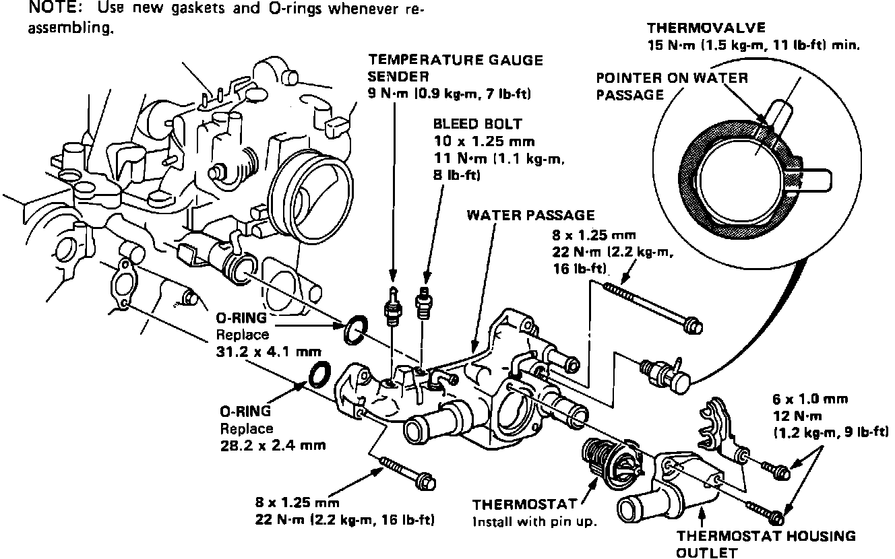
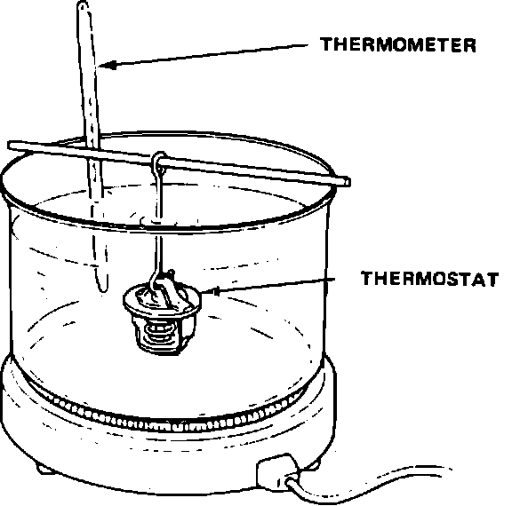

Thermostat: Service and Repair
Thermostat Housing Exploded View:

THERMOSTAT HOUSING EXPLODED VIEW
Thermostat Testing:

THERMOSTAT TESTING
If the thermostat is open when cold, it must be replaced.
1. Place thermostat in water filled container as shown in image.
CAUTION: Do not let the thermostat touch the bottom of the container.
2. Heat the water and using a thermometer, measure the temperature at which the thermostat first opens and then fully opens.
Opening Temperatures:
Starts opening: 172°F (78°C)
Fully open: 196°F (91°C)
3. Measure the lift height of the thermostat opening when fully open.
Lift Height:
0.31 in. (8 mm)